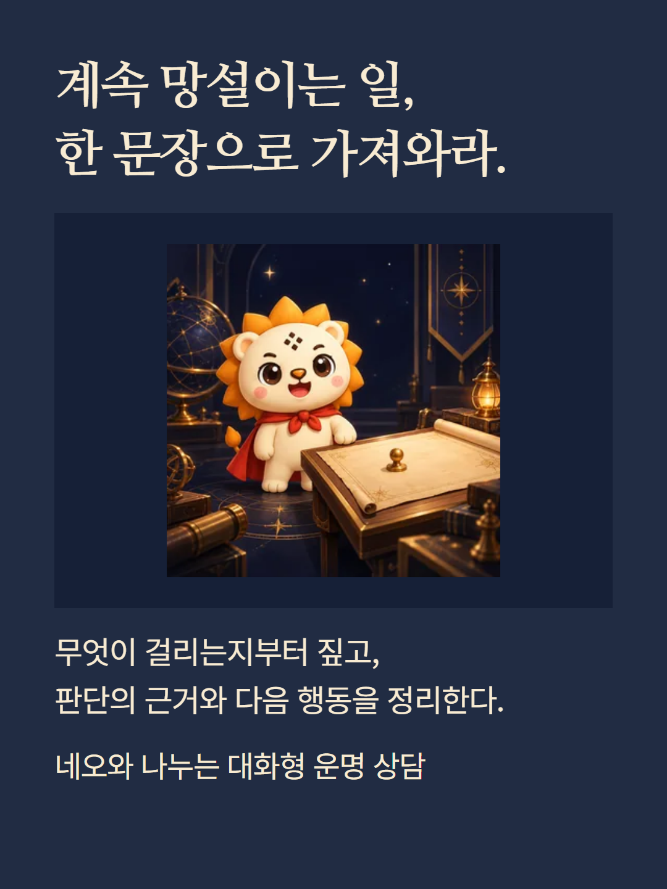
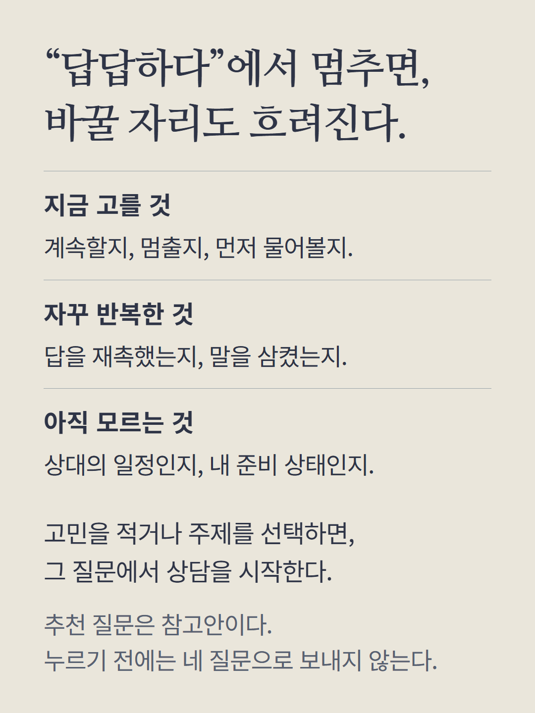
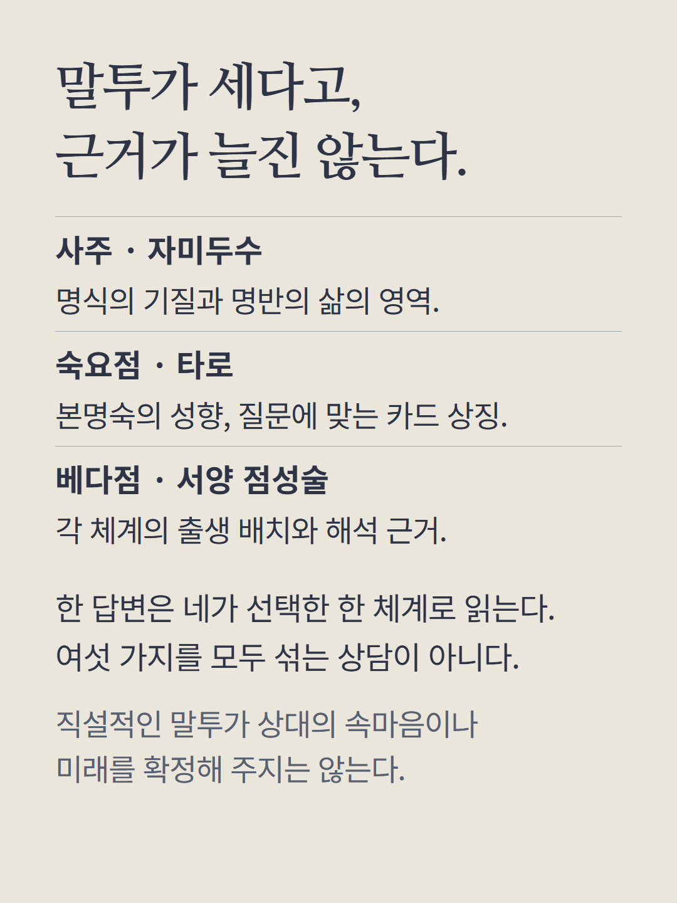
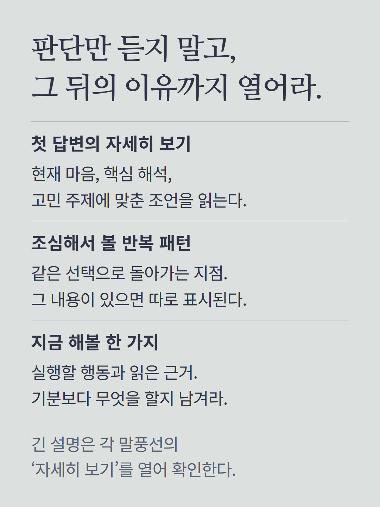
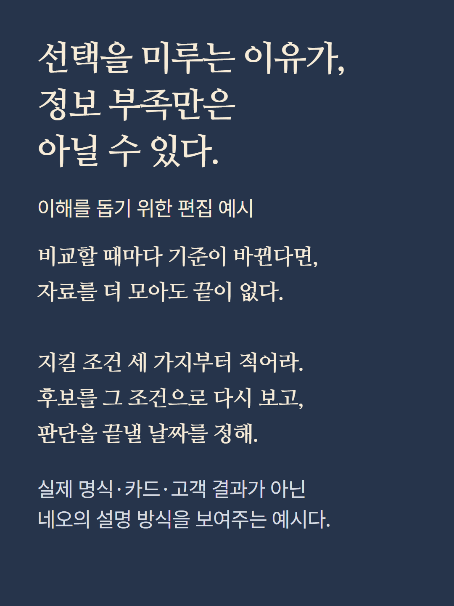
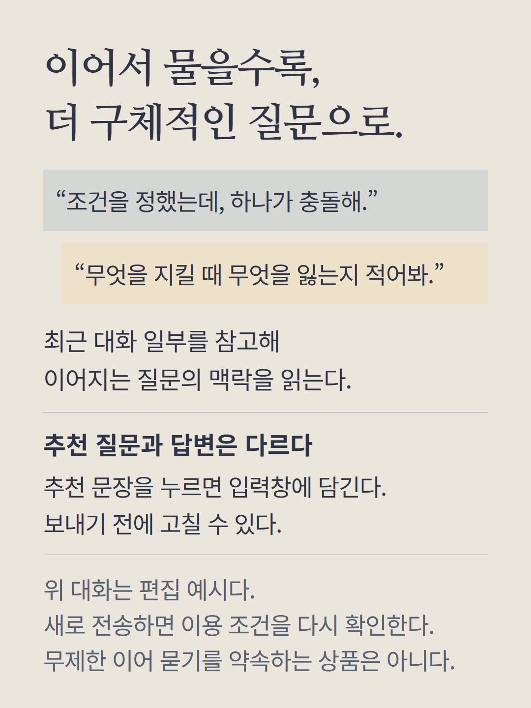
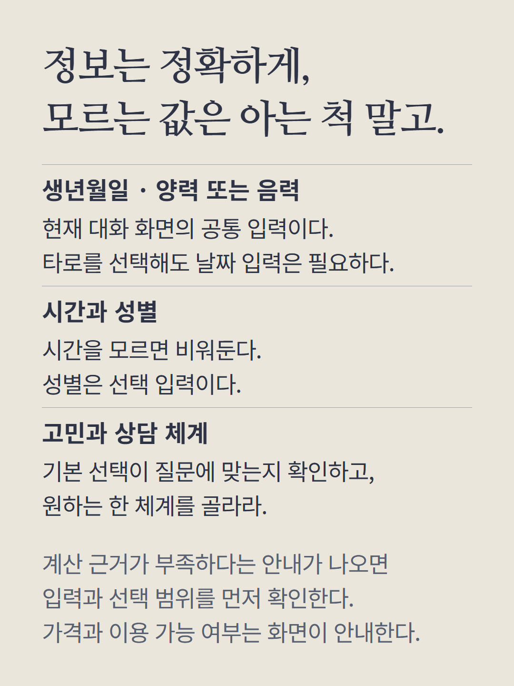
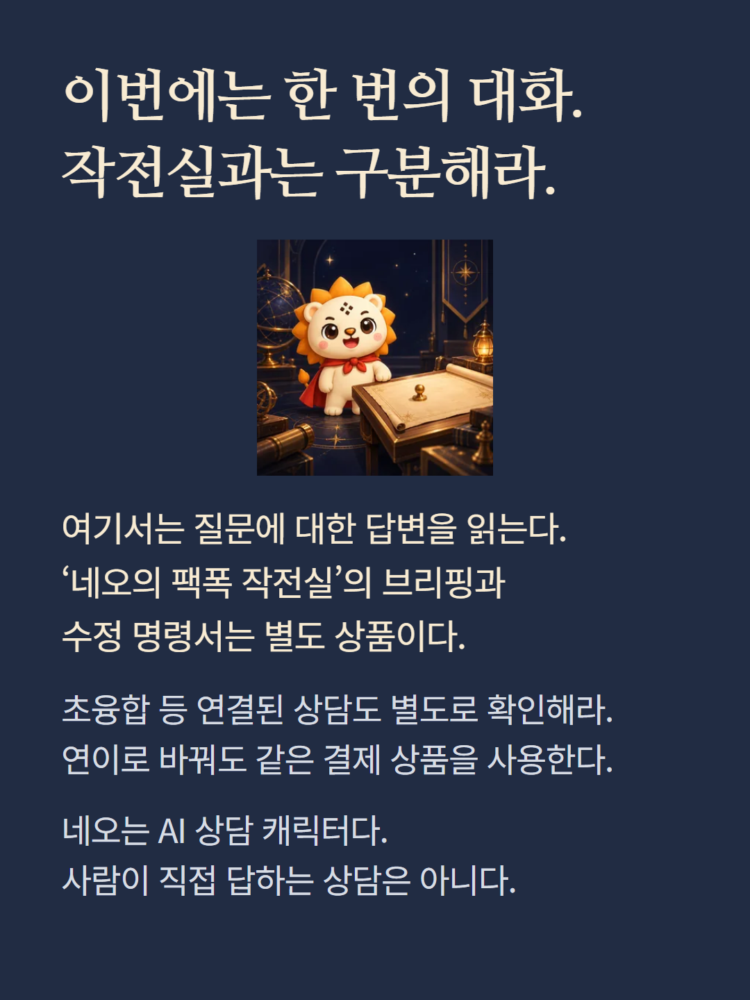

현재 대화형 상담 화면의 네오 모드입니다. 연이와 같은 1회 유료 답변 상품을 사용하며 말투가 달라집니다. 별도 상품인 네오의 팩폭 작전실의 브리핑·수정 명령서·특전은 여기에 포함되지 않습니다. 질문마다 선택한 한 체계의 근거를 사용하고 최근 대화 일부를 참고합니다. 추천 질문의 새 답변도 전송 시 이용 조건을 다시 확인합니다. 안내 속 대화와 작전 노트는 이해를 돕기 위한 편집 예시이며 실제 고객 결과가 아닙니다. 네오는 AI 상담 캐릭터입니다.